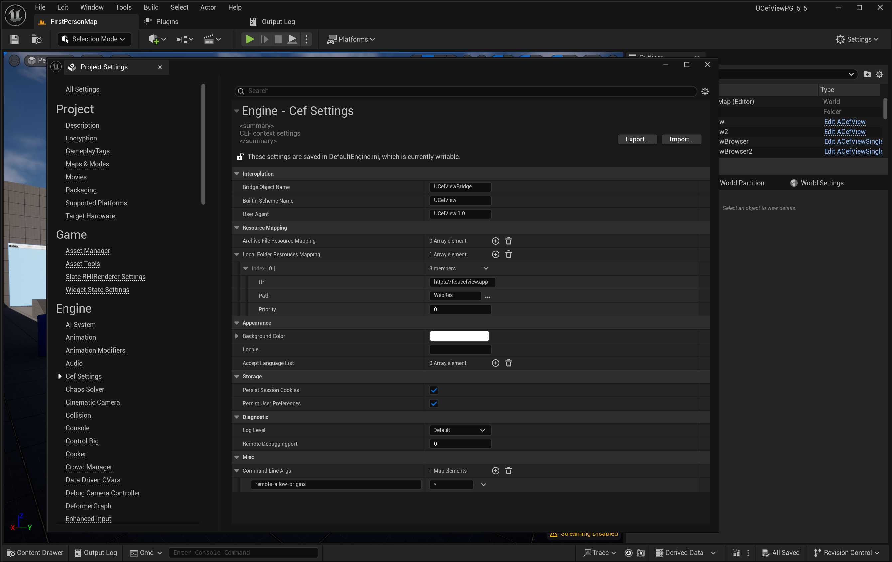

1. 安装
- 从 Fab 将 UCefView 插件安装到你的 Unreal Engine 项目中。UCefView on Fab UCefView on Fab
- 在插件窗口中确认插件已启用（Edit -> Plugins）。
- 警告
- UCefView 不能与 Unreal 内置 Web Browser 插件同时使用。请在 Edit > Plugins > Built-in > UI > Web Browser 中禁用 Unreal 内置 Web Browser 插件。
2. 项目设置
打开 Edit -> Project Settings...: Engine -> Cef Settings 配置项目级 CEF 设置。常用设置包括：

Cef Settings
- Locale： 设置 CEF 浏览器区域语言。
- User Agent： 设置浏览器请求使用的 user agent。
- Accept Language List： 设置 Web 请求接受的语言列表。
- Command Line Args： 传递给 CEF browser process 的额外命令行参数。
- Builtin Scheme Name： 内置资源使用的 scheme 名称。
- Bridge Object Name： C++/JavaScript 桥接对象名称。
- Disable Sandbox： 是否禁用 UCefViewHelper 进程沙箱。
- 注解
- macOS 平台上，CEF 不支持在主进程中启用 sandbox。若你要发布带 UCefView 的游戏产品，需要在生成的 Xcode 项目中关闭 App Sandbox。
更多细节请参考 UCefSettings 类。
3. 使用 SCefView (Slate)
- 在 Slate UI 中包含 SCefView.h。
- 创建 SCefView widget。
- 使用 SCefView::SetUrl 加载 URL。
- 使用 FCefViewSettings 配置 WebView 外观和行为。
- 绑定 SCefView::OnLoadStart、SCefView::OnLoadEnd、SCefView::OnConsoleMessage 等事件。
TSharedPtr<SCefView> MyWebView;
.Url(TEXT("https://www.google.com"))
.OnLoadStart(this, &SMyWidget::HandleLoadStart)
.OnLoadEnd(this, &SMyWidget::HandleLoadEnd)
Declares the SCefView class, a Slate widget that hosts a CEF browser.
A Slate widget that embeds a Chromium Embedded Framework (CEF) browser.
定义 SCefView.h:42
4. 使用 UCefView (UMG)
- 打开 Widget Blueprint。
- 在 Palette 中搜索 UCefView 并拖入 widget 层级。
- 在 Details 面板设置 UCefView::Url 来加载页面。
- 根据需要调整可用属性。
- 绑定 UCefView::OnLoadStart、UCefView::OnLoadEnd、UCefView::OnConsoleMessage 等事件。
5. 使用 Blueprint
UCefView 提供了多个可直接参考或扩展的 Blueprint widget。
- **WBP_CefView**：封装单个 UCefView 的基础 user widget。
- **WBP_CefViewBrowserTab**：包含地址栏和后退、前进、刷新按钮的浏览器 tab widget。
- **WBP_CefViewSingleTabBrowserWindow**：完整的单标签浏览器窗口。
- **WBP_CefViweMultipleTabBrowserWindow**：完整的多标签浏览器窗口。

Custom With Blueprint